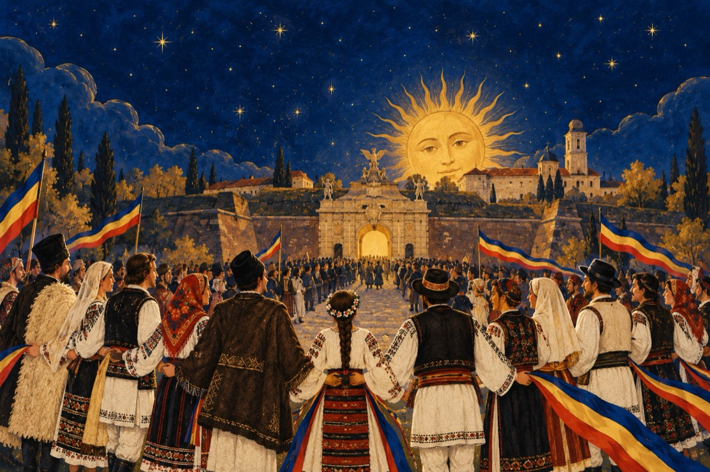

1918-2020
UNIREA PRINCIPATELOR
Trecut-au anii rând pe rând
De la Unirea Principatelor Române
Astăzi ca în fiecare an, cu evlavie sărbătorind
Marele eveniment ce poporului i se cuvine
Basarabia, Bucovina, Transilvania, Banat
Crișana, Maramureș, provincii românești
Acasă la regatul românesc s-au adunat
Prin glasul ardelenilor, a Marii Adunări Naționale, Alba Iulia!
Țară Românească a fost să te reîntregești!
Istoria a tălmăcit și răstălmăcit a noastră națiune
În vremurile de apusă amintire ce au fost,
Eroi au fost, eroi mai suntem azi în acțiune
Care veghează cu credință a României rost
Ne-am reîntregit în trupul Europei de astăzi
În care-am fost și vrem ca țara să rămână.
Dorința noastră este să veghem la hotarele țării trezi
Ca niciodată să nu se mai despartă nația română.
Iar Basarabiei i-a venit timpul acasă ca să vină!
Vasile Groza